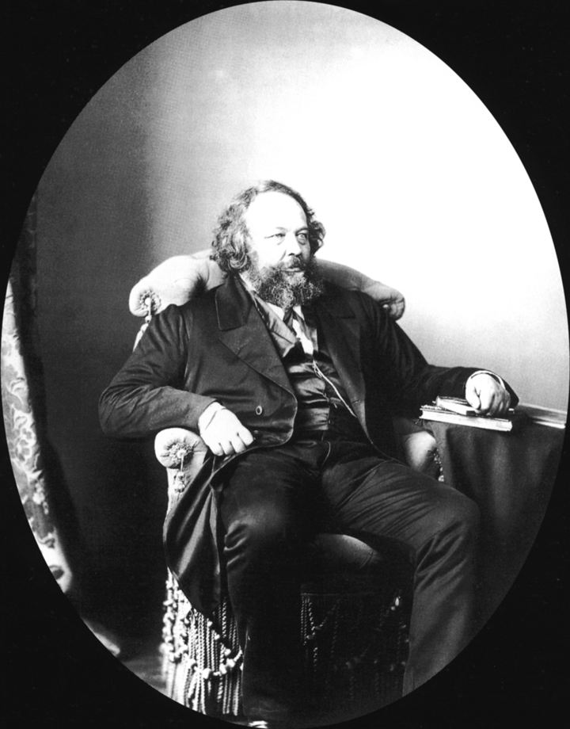

Contexte
Mikhaïl Bakounine (1814-1876) est un noble russe devenu révolutionnaire professionnel. Il a combattu sur les barricades de 1848, passé huit ans en forteresse puis en Sibérie, s'est évadé par le Japon et l'Amérique. À partir de 1868, il rejoint l'Association internationale des travailleurs et devient le grand adversaire de Marx.

Ce texte est un fragment d'un livre jamais achevé, L'Empire knouto-germanique et la Révolution sociale, écrit en 1870-1871, au moment de la guerre franco-prussienne et de la Commune. Après sa mort, ses amis Carlo Cafiero et Élisée Reclus le publient à Genève en 1882 et lui donnent son titre. Il devient l'un des textes anarchistes les plus lus au monde.
La thèse
L'idée de Dieu et l'idée d'autorité sont incompatibles avec la liberté. Si Dieu est le maître absolu, l'humain est esclave ; or l'humain doit être libre ; donc il faut rejeter Dieu. Le matérialisme, qui part de la nature, mène à l'émancipation ; l'idéalisme, qui part du divin, mène à l'asservissement.
Retournant la formule de Voltaire (« si Dieu n'existait pas, il faudrait l'inventer »), Bakounine écrit : « si Dieu existait réellement, il faudrait le faire disparaître ».
Les idées, dans l'ordre
- Trois forces humaines : l'animalité, d'où vient l'économie sociale ; la pensée, d'où vient la science ; et la révolte, d'où vient la liberté. L'histoire humaine est la sortie progressive de l'animalité par ces deux dernières.
- Relecture de la Genèse. Manger le fruit de l'arbre de la connaissance est le premier acte d'émancipation. Dieu y paraît en tyran jaloux, et Satan en premier libre penseur.
- Pourquoi la religion tient : par l'ignorance, l'épuisement et la misère. Le peuple cherche au ciel la consolation qu'il ne trouve pas sur terre. Les sermons n'y feront rien : seule une révolution sociale, en changeant la vie réelle, fera reculer la religion.
- Tout ce qu'on donne à Dieu, on le retire à l'humanité. Plus le ciel est riche, plus la terre est pauvre.
- Les idéalistes sont les plus dangereux. Ceux qui parlent sans cesse d'âme, de devoir et de patrie justifient en pratique la domination des puissants et l'exploitation des masses.
- Contre l'Église des savants. Un gouvernement de scientifiques serait une nouvelle aristocratie. La science est faite pour éclairer la vie, pas pour la diriger : elle ne connaît que des généralités, alors que la vie est faite d'individus.
L'autorité du cordonnier
C'est le passage le plus cité. Bakounine ne rejette pas tout savoir ni tout conseil. Pour ses bottes, il consulte le cordonnier ; pour un pont, l'ingénieur. Mais cette autorité est librement choisie, discutée et révocable : il écoute plusieurs avis, compare, et décide lui-même. Il refuse en revanche toute autorité imposée, permanente ou prétendue infaillible, y compris celle de la science.
Débats et limites
- Un texte inachevé, répétitif par endroits, qui s'arrête au milieu d'une phrase.
- Un matérialisme du XIXe siècle, très confiant dans le progrès des sciences. Bakounine voit pourtant venir le danger d'une technocratie, ce qui le rend très actuel.
- L'homme Bakounine n'est pas un modèle sur tout. Il a aimé les sociétés secrètes et les plans de conspiration, ce qui cadre mal avec son refus de l'autorité. Certains de ses textes contre Marx contiennent aussi des passages antisémites, qu'il faut regarder en face plutôt que cacher.
Et aujourd'hui ?
La distinction entre l'autorité qu'on choisit et celle qu'on subit reste un outil précieux. Elle aide à penser la place des experts, des algorithmes et des gouvernements « techniques » qui prétendent décider à notre place parce qu'ils sauraient mieux que nous. La question laïque, elle, n'a pas disparu : l'alliance entre pouvoirs religieux et pouvoirs politiques se voit encore dans de nombreux pays.
À retenir
- Religion, État et privilèges forment un même système de domination.
- Accepter un conseil n'est pas obéir : l'autorité légitime est volontaire et révocable.
- La science doit éclairer, jamais gouverner.
- La liberté de chacune et de chacun n'existe qu'avec l'égalité économique et la liberté des autres.
Le texte complet est sur Mamie Commune. Lire en ligne ou ouvrir le PDF.
Sources et pour aller plus loin
Le texte original
- Le texte complet sur Mamie Commune, à lire en ligne ou en PDF.
- « Dieu et l'État » sur la Bibliothèque anarchiste : le texte intégral, aussi en PDF et en livre numérique (EPUB).
Lire
- Bakounine, Madeleine Grawitz, Plon, 1990.La grande biographie en français, vivante et documentée.
- Ni Dieu ni maître. Anthologie de l'anarchisme, Daniel Guérin, La Découverte.De larges extraits de Bakounine, replacés dans leur époque.
- Trois conférences aux ouvriers du Val de Saint-ImierNotre fiche : le même Bakounine, en plus simple, devant des horlogers.
Sur le web
- Dieu et l'État sur WikipédiaHistoire du manuscrit et de sa publication.
- Mikhaïl Bakounine sur WikipédiaUne vie de barricades, de prisons et d'évasions.
- La libre-penséeLe mouvement anticlérical dans lequel le texte a beaucoup circulé.
Fiche de lecture rédigée par la bande à Mamie d'après les textes de la Bibliothèque anarchiste francophone. Cette fiche est libre de reproduction.
À lire aussi · État & pouvoir
- Les Lois scélérates de 1893-1894Trois lois d'exception votées contre les anarchistes punissent des opinions et des conversations : un précédent contre toute opposition.
- Le Bétail patriotiqueLa caserne ne défend pas la nation : elle broie la volonté pour fabriquer des sujets dociles, puis des électeurs obéissants.
- Les Anarchistes : ce qu'ils sont, ce qu'ils ne sont pasNi rêveurs inoffensifs ni brutes : les anarchistes combattent ensemble l'État, la propriété et la religion.